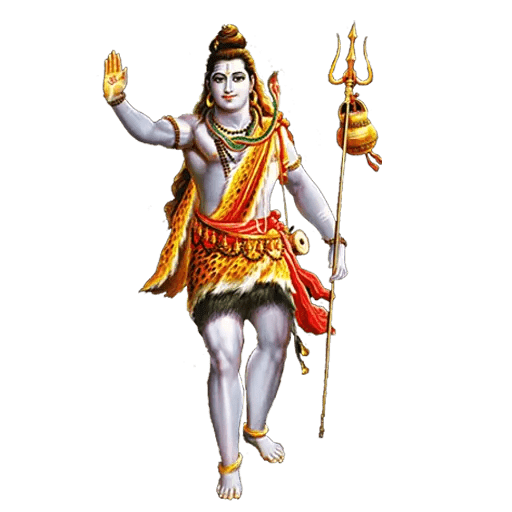

Shiv Puja - Worship of Lord Shiva

What is Shiv Puja?
Why Perform Shiv Puja?
Benefits
How to Perform
Conclusion
Shiv Puja: Worship of Lord Shiva
Shiv Puja is a sacred Hindu ritual dedicated to Lord Shiva, one of the principal deities in Hinduism. This Puja is believed to bring blessings of peace, protection, and spiritual liberation.
What is Shiv Puja?
Shiv Puja is a ritual in Hinduism dedicated to the worship of Lord Shiva, the God of destruction and transformation. Shiva is revered as the supreme deity who brings about both the creation and dissolution of the universe. Worshipping Lord Shiva is believed to bring peace, prosperity, and liberation from worldly attachments.
Why Do We Perform Shiv Puja?
- Spiritual Growth: Lord Shiva is the ultimate source of knowledge, and performing Shiv Puja helps achieve spiritual enlightenment.
- Protection from Evil: Lord Shiva protects devotees from evil influences, ensuring peace and safety in their lives.
- Overcoming Difficulties: Performing this Puja helps overcome life's obstacles and challenges, bringing clarity and strength.
- Mental Peace: Shiv Puja helps calm the mind and reduces stress, leading to inner peace and tranquility.
- Self-Realization: By worshipping Lord Shiva, devotees are believed to attain liberation and self-realization.
Benefits of Shiv Puja
- Mental Peace: Shiv Puja brings mental peace and relief from stress and anxiety.
- Protection: Lord Shiva is the protector of the universe and his blessings provide safety from harm.
- Spiritual Liberation: Regular worship helps devotees attain spiritual progress and liberation (Moksha).
- Healing: Lord Shiva is known to heal physical and emotional ailments, restoring health and well-being.
- Prosperity: Shiv Puja brings material and spiritual prosperity, ensuring a balanced and fulfilling life.
How to Perform Shiv Puja (Step-by-Step)
Shiv Puja is typically performed on Mondays, which is considered the most auspicious day for worshipping Lord Shiva. Here's a step-by-step guide:
- Preparation: Set up an altar with an image or idol of Lord Shiva, offering items like milk, honey, fruits, and flowers (especially Bilva leaves).
- Cleanse Yourself: Take a bath to cleanse your body and mind before starting the puja.
- Offer Bilva Leaves and Flowers: Offer fresh Bilva leaves, which are sacred to Lord Shiva, along with flowers, preferably white or red.
- Chant Shiva Mantras: Recite powerful mantras such as "Om Namah Shivaya" or "Om Trayambakam Yajamahe" to invoke Lord Shiva's blessings.
- Offer Milk and Water: Pour milk, water, or honey over the Shiva Lingam while chanting mantras to purify the deity.
- Prayers: Pray for peace, protection, and spiritual growth, seeking Lord Shiva's divine guidance.
- Aarti: Perform Aarti (wave a lit lamp in a circular motion) while singing devotional songs to Lord Shiva.
- Prasad (Offering): After completing the puja, offer prasad (typically sweets or fruits) and distribute it to the family members or devotees.
Conclusion
Shiv Puja is a deeply spiritual ritual that helps devotees connect with Lord Shiva, the embodiment of peace, destruction, and transformation. By performing this Puja regularly, one can receive Lord Shiva's blessings of mental peace, prosperity, and spiritual growth, ultimately leading to liberation from the cycle of life and death (Moksha).